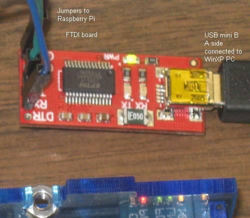

In the summer of 2012 I recieved our first Raspberry Pi. That first summer I explored the early model B that had 256MB of ram. These are my notes.
This is a single board ARM processor computer. It boots from an SD card. USB ports and an Ethernet LAN port are included. A number of expansion boards are in the works. These should allow one to connect to the real world. It is also possible to connect to the real world with a general purpose USB virtual serial port.
It has an HDMI output that can connect to a digital TV or monitor. A USB keyboard can be connected.
This is really modern looking as ARM is the sort of low power consumption processor used in tablets and smart phones including iPads iPhones and Androids.
There are different options for operating system. We will start off with Raspbian "wheezy" as this was the recommended downloadable image when our R-Pi arrived. (download page http://www.raspberrypi.org/downloads). Some background information can be found at http://www.raspbian.org/RaspbianAbout .
Photo of the Raspberry Pi connected to a monitor via the HDMI. Power, USB
Keyboard and USB mouse also connected. When testing I also connected an
ethernet LAN cable (not shown here). The ARM processor is actually under the
RAM which can be seen at the center of the board
(for layout diagram see http://www.raspberrypi.org/wp-content/uploads/2011/11
/Raspi-Model-AB-Mono-1.png)
Background https://www.youtube.com/watch?v=u4THiC5-JZo
Other Handy information http://www.raspberrypi-spy.co.uk/
The Raspberry Pi is here.
ordered and now also received HDMI to DVI-D cable so the RPi can be used with our lab monitors.
also ordered and received blank SD cards. The following links were used to get instructions and install the image.
RPi Easy SD Card Setup -- http://elinux.org/RPi_Easy_SD_Card_Setup
how 2. http://www.raspberrypi.org/downloads
The Raspbian SD card image was recently released so I decided to use it (see http://www.raspberrypi.org/archives/1605 -- Raspbian-based SD card image released). I found the instructions given in 1 and 2 above easy to follow. Some people live video demos. One has been posted here (http://www.youtube.com/watch?v=ZpBThpH4iuA).
I have plugged in our Raspberry Pi and so far everything seems to be working. The Raspbian-based SD image has a new setup tool called raspi-config. I stopped to checkout http://elinux.org/RPi_raspi-config to see if there is anything I want to configure before I do anything else.

There is a new revision 2.0 that will be shipping. Our first R-Pi is a revision 1 board. The differences are itemized at the following link:
http://www.raspberrypi.org/archives/1929 -- itemized changes
http://www.raspberrypi.org/archives/1925 -- with a photo of new board
The tool recommended on the Raspberry Pi Downloads site
for windows users to get an linux image onto a SD card and also to back up SD cards is available here
It looks like this is still an early release of the tool and from what I read in the forums it does not always work with SD readers built into laptops. Fortunately when I tried it with our Dell Latitude laptop I was able to save the Rasbian image to the SD card with no issues.
After working with the R-Pi for many days I wanted to save an card image before making more changes. This did not work with the Dell Latitude. I did not get any error messages but ended up with a tiny 57 MB *.img file which could not be a proper image of a 8 GB SD card. After playing around with this for some time I decided to try it out on our newest Acer netbook. It worked perfectly and the new image file was just under 8 GB as expected.
I set this RPi to boot to the text login screen.
The X window system is still available and can be started by simply typing
startx. On GNU/Linux systems (and Unix) the graphical windows system is
optional. When X is not used more memory is available for other tasks.
Set the timezone
expanded the root partition to fill the 8 GB SD Card.
Set it to use US keyboard layout (the default is UK which clearly is different -- http://www.goodtyping.com/teclatUK.htm). In Canada (outside of Quebec) the US Keyboard is typical (http://www.cooltoyzph.com/image/US_Keyboard_layout.jpg).
The Raspberry Pi does not have a hardware real time clock. It looses the set time and date every time it is powered off. It can automatically get date and time off the internet. That works for me at home but in the lab on campus that service is not available so the time and date must be set manually.

This updadate to this page has been done on the Raspberry Pi itself. The Raspbian SD image ships with more than one browser.
First attempt was using the NetSurf web browser. Editing this wiki page in this way is sluggish. The interface seemed fast enough until the edit session started.
The Midori web browser does not have the problem of lagging as I type when editing this wiki.
 The ttyAMA0 UART provides a way to log on locally
with the Raspberry pi headless. Jumpers were connected to ground, Tx and Rx.
The ttyAMA0 UART provides a way to log on locally
with the Raspberry pi headless. Jumpers were connected to ground, Tx and Rx.
Jumpers ground black Tx blue Rx green
 Here the other end of the jumpers connect to corresponding pins on a FTDI UART to USB converter (from Solarbotics) which connects to a Personal Computer. The other end of the jumpers could be connected to other interfaces. They could for example connect to a PIC board or a PIC on a solderless breadboard. The jumpers could be eliminated entirely if one used the Adafruit Pi Plate.
The Solarbotics FTDI board is easily modified for 3.3 volt operation. This modification involves cutting one hair line trace and adding a solder bridge to the underside of the FTDI board.

The end of the boot sequences messages looks as follows (as displayed in hyperterminal on a XP computer.).
... [ 4.872377] EXT4-fs (mmcblk0p2): mounted filesystem with ordered data mode. Opts: (null) [ 4.885483] VFS: Mounted root (ext4 filesystem) on device 179:2. [ 4.895629] Freeing init memory: 200K [ 4.952638] usb 1-1: new high speed USB device number 2 using dwc_otg [ 5.173196] usb 1-1: New USB device found, idVendor=0424, idProduct=9512 [ 5.186067] usb 1-1: New USB device strings: Mfr=0, Product=0, SerialNumber=0 [ 5.199258] hub 1-1:1.0: USB hub found [ 5.207472] hub 1-1:1.0: 3 ports detected [ 5.492967] usb 1-1.1: new high speed USB device number 3 using dwc_otg [ 5.613317] usb 1-1.1: New USB device found, idVendor=0424, idProduct=ec00 [ 5.627921] usb 1-1.1: New USB device strings: Mfr=0, Product=0, SerialNumber=0 [ 5.644377] smsc95xx v1.0.4 [ 5.708429] smsc95xx 1-1.1:1.0: eth0: register 'smsc95xx' at usb-bcm2708_usb-1.1, smsc95xx USB 2.0 Ethernet, b8:27:eb:fc:b8:d1 [ 20.976886] EXT4-fs (mmcblk0p2): re-mounted. Opts: (null) [ 21.338713] ### snd_bcm2835_alsa_probe c05d07a0 ############### PROBING FOR bcm2835 ALSA device (0):(1) ############### [ 21.354768] Creating card... [ 21.360206] Creating device/chip .. [ 21.366883] Adding controls .. [ 21.372375] Registering card .... [ 21.387371] bcm2835 ALSA CARD CREATED! [ 21.399343] ### BCM2835 ALSA driver init OK ### [ 29.089017] smsc95xx 1-1.1:1.0: eth0: link up, 100Mbps, full-duplex, lpa 0x45E1 Debian GNU/Linux wheezy/sid raspberrypi ttyAMA0 raspberrypi login:
By default /dev/ttyAMA0 is set up to display the boot information and to allow login. This would be particularly useful for headless operation particularly if remote login via SSH goes down for some reason.
By default one would not be able to access this UART with programs like minicom since it is by default listening to input to the command shell. If desired the device configuration can be changed.
The ttyAMA0 interface has been reset for use by a user (meaning it is not longer at the default settings). This required changes to
/etc/inittab
/boot/cmdline.txt
See http://www.hobbytronics.co.uk/raspberry-pi-serial-port for the details.
This allows one to use minicom with the /dev/ttyAMA0 device.


This is a screen shot of what is seen in a remote command shell session. Note that the terminal mutiplexer tmux is being used so exactly the same session of minicom is visible at more than one remote computer.
In this case the PIC is not powered initially which results in some garbage being displayed as a result of noise received. As soon as the PIC is powered up a message is displayed. After this the Raspberry Pi passes on keystrokes to the PIC which will turn the LED on when it receives an "L" and off when it receives an "F".
Notes on PIC program and other details at rpi_pic_led.html
While it is possible to use the Raspberry Pi connected to a monitor (or HDMI TV), keyboard and mouse for us it would be great to have remote access most of the time. This can be done with a secure shell.
Notes
when this diagram was drawn I had not yet reconfigured /dev/ttyAMA0 for general use. Once this is done the PIC can be connected directly to the Raspberry Pi (see ttyama0_configuration_reset)
The connection to the USB to Serial FTDI board is more reliable when the Raspberry Pi is connected to a USB hub and the USB to Serial FTDI board is downstream of the hub.

The screen shot below shows a remote login. This time the Raspberry Pi was booted with no moitor, keyboard or mouse attached. I don't even have the cables or USB devices at home! What I do have at home is a router (with wi-fi and LAN connections) and a winXP computer as well as access to an Android tablet (the Raspberry Pi can be accessed by both the winXP computer and the tablet).

It is also possible to get a remote desktop. More at
Example screen shot showing a remote Raspberry Pi X desktop window sitting on a windows XP desktop. It is also possible to remotely interact with the Raspberry Pi desktop on an Android device.

New page at matplotlib.html with more details.
A screen shot of how a matplotlib plot looks on the Raspberry Pi remote desktop is shown below. This is the screenshot with the remote Raspberry Pi desktop sitting on a windows XP desktop using the tightvnc viewer. This can also be viewed on an Android tablet using android-vnc-viewer

Also of interest
IPython will run on the Raspberry Pi. I have a new page to show screen shots:

I started to play with Geany. This is an IDE that can be used for C projects (and other languages) on the Raspberry Pi.
I started with a simple hello world program in C. There were no real surprises with this simple project. Geany worked like a typical IDE. Meaning I was able to create the project, create a simple c file, build the project and run the result from within the IDE.
More detail and screen shots at this link geany.html.
 The terminal multiplexer tmux allows one
to access the same command shell session from more than one device. In this
screen shot one can see a PuTTY window and a hyperterminal window. They are
sharing a single tmux session so anything typed in one window shows up in all
(not shown here the same shell is appearing on a remote Android device.
The terminal multiplexer tmux allows one
to access the same command shell session from more than one device. In this
screen shot one can see a PuTTY window and a hyperterminal window. They are
sharing a single tmux session so anything typed in one window shows up in all
(not shown here the same shell is appearing on a remote Android device.

In this session /dev/ttyAMA0 is connected to a Serial to USB adapter and PC running Hyperterminal. Alternatively /dev/ttyAMA0 could be connected to a PIC (running at 3.3 volts).

The Raspberry Pi running Raspian "Wheezy" boots with a driver installed for FTDI FT232RL. A suitable board containing that IC and supporting parts is available from Solarbotics.
I have used this board in the past to connect a PC running windows to PIC projects. It works nicely plugged into the USB port of the Raspberry Pi (at least when loaded with Raspbian which is what I am using).
In Linux systems a user login must be a member of the dialout group in order to use a tty device. At the command prompt a ID command allows one to determine which groups they belong to.
$ id uid=1002(pic18lf2620) gid=1003(pic18lf2620) groups=1003(pic18lf2620),20(dialout) $
If dialout does not appear in the list the user must be added to the dialout group. Instructions on added a user to a group appear here:
In Linux many users can be added. For testing the virtual USB device I used a new user called pic18lf2620 and did not add this user to the sudo group. This limits what can be done with the account.
Instructions regarding adding users can be found here:
When the TTLyFTDI USB-to-TTL Cable Adapter board is plugged into the Raspberry Pi USB port it can be accessed as /dev/ttyUSB0 A text file can be sent through the virtal serial port using a copy command at the command prompt.
$ cp textfile /dev/ttyUSB0
It is also possible to interact with the port using a terminal program. One simple terminal program that can be started from the CLI is minicom. This program is compatible with a secure shell.
Instructions at
For anyone already used to doing projects with PIC MCU's a USB Virtual Serial Port provides a simple way to connect PIC project to the Raspberry Pi without concern about damage to the Raspberry Pi board. The FTDI board acts as a buffer as well as a USB to serial translator.
The TTLyFTDI USB-to-TTL Cable Adapter board from Solarbotics is automatically detected by a Raspberry Pi running Raspbian (the driver is pre-installed in the Raspbian image).
I will create new pages for new projects.
Raspberry Pie connected to PIC which echo's what it receives back to R-Pi
As above and the PIC will also respond to commands to turn an LED on or off
Updates on bitbucket. Have a new adc branch. The ADC can be used to read the voltage on the LED.
The Raspberry Pi can interact with a PIC MCU to read sensor data and push it to a website.
Followed the directions at
to install Apache web server on Raspberry Pi. It worked without any issues.

Followed the directions at
I was able to sFTP a backup version the dokuwiki PHP package that runs this site to the Raspberry Pi. A screenshot is shown below.

Followed directions at http://elinux.org/RPi_Adding_USB_Drives#Mounting_a_Partition I deviated from the instructions in that page in that no USB hub was used. Access to the flash drive is working.
Used procedure given at http://www.penguintutor.com/linux/printing-cups to set up printer.
Installed Lynx text only web browser. It reminds me of the early days of the world wide web. It can be used with the remote raspbian command line interface. Lynx allows one to test what a web page looks like without images and ensure it can be navigated by web robots and screen reader systems. It is also possible to edit wiki pages (this paragraph was edited using Lynx running on the Raspberry Pi).

The screenshot shown above is from the Windows desktops.
To get Lynx to work with the Android tablet it was necessary to install an alternate keyboard. "Hackers Keyboard" Android application was installed. This virtual keyboard application works with ConnectBot as well. The default virtual keyboard lacks a Ctrl key and arrow keys that are needed for both lynx and ConnectBot.
For more on remote access see ssh.html.
Use the following to halt the Raspberry Pi:
sudo shutdown -h now
You will be prompted for the su password. Then just type logout.
You should see all of the LED's turn off except the power LED. It is then safe to pull the power plug.
sudo reboot
Expect the reboot to take some time. Progress can be watched on the LED's. When the Raspberry Pi has fully booted with a network cable attached the LED's will be on as follows
OK off PWR on green FDX on green LINK on green may still flash a bit 10M on green
I am generally using the Raspberry Pi headless (without a monitor and keyboard but with a network cable).
At home I control the IP address by setting IP reservations on the DHCP settings of my router.
In the physics lab and other places I don't have that control over the IP address. The IP address can be saved to a log file by making a small change to the /etc/rc.local file.
The lines that I added to rc.local all contain >> /home/danp/ip.log (danp is just the login username I am currently using). In the lab computers are consistently getting the same IP address from DHCP when they are switched on. There is no certainty the IP address assigned will always be the same address in the future but if it changes the new address will be logged. It would be handy to have a router on hand to make it easier to read the log if/when this should happen.
1 2 3 4 5 6 7 8 9 10 11 12 13 14 15 16 17 18 19 20 21 22 23 24 25 | #!/bin/sh -e # # rc.local # # This script is executed at the end of each multiuser runlevel. # Make sure that the script will "exit 0" on success or any other # value on error. # # In order to enable or disable this script just change the execution # bits. # # By default this script does nothing. # Print the IP address _IP=$(hostname -I) || true if [ "$_IP" ]; then printf "My IP address is %s\n" "$_IP" # the output from this line should appear near the end of all the # boot message if one is watching the boot-sequence with a monitor. printf "\tMy IP address is %s\n" "$_IP" >> /home/danp/ip.log # appends the logfile fi date >> /home/danp/ip.log # these lines also print msgs at the end of the log file printf "rc.local was modified by Dan Peirce B.Sc.\n" >> /home/danp/ip.log exit 0 |
The log shows:
Two more Raspberry Pi's were received on October 4, 2012. A new log entry shows:
Sept. 19, 2012 Introducing turbo mode : Temperature and frequency widgets : USB interrupt rate reduction : WiFi is now supported out of the box...
Oct. 15, 2012 Model B now ships with 512MB of RAM -- This should be kept in mind for future reference. So far the Model B's we have were all ordered and received before this development. It should help desktop performance (which is slow on our RPi's -- so far I have mostly been using a bash shell).
/dev/ttyAMA0 UART now tested and working with LED-PIC project see ttyama0_uart
Next step to read temperature sensor. Once I have some hardware as I want it I
will hard wire it on a Protoyping Pi plate. For now I am using a breadboard.
Adafruit Prototyping Pi Plate Kit for Raspberry Pi. There is a review of this board and others at
http://www.doctormonk.com.
http://elinux.org/RPi_Low-level_peripherals#General_Purpose_Input.2FOutput_.28GPIO.29
http://elinux.org/RPi_BCM2835_GPIOs -- table of all BCM2835 GPIO pins including those on the RPi P1 header
http://www.raspberrypi.org/phpBB3/viewtopic.php?f=37&t=15511. -- setting up i2c and spi
I think we would continue using a PIC18F for interfacing to sensors, LED's and switches. We could then add the Raspberry Pi when we want to access the PIC18F from a PC. One can log into the R-Pi over a LAN using a secure shell. [There are many options for accessing the PIC from the R-Pi.
The Raspberry Pi is also capable of running a simple web server. It could act as a bridge between our PIC18f and the LAN.
The Raspberry Pi does have a serial port running at 3.3v (rather than RS-232 voltage levels). One should be able to connect a PIC also running at 3.3 volts directly to the Raspberry Pi serial port. (It may be significantly easier to do this with python. Something to look into).
Other uses might eventually present themselves but that alone would probably justify the cost.
They were developed as computers for teaching programming. They come with Python installed for that purpose. Since they run Linux they also have a native c compiler. We would could connect to the Raspberry Pi's over the LAN using a remote login.
If the raspberry pi is used as a workstation with a monitor and keyboard one can use a graphical inte'grated development environment. If used with a remote command line interface one will only have command line tools. If nothing else using command line tools gives one some insight into how the C build process works.
Access to GPIO
http://www.raspberrypi.org/phpBB3/viewtopic.php?f=44&t=9230
More on GPIO at http://elinux.org/RPi_Low-level_peripherals I think for now I will avoid access to the gpio apart from the UART for which the kernel support exists and should stay stable in upcoming releases. The UART should be able to talk to a 3.3 V PIC USART without issues; however it would be expedient to have a buffer at the Raspberry Pi as a precaution.
In the old Electronics Technology program we used to use Linux boxes to teach networking. One limitation of this "computer" is that it only has one network port and we can't just plug in another one. There are things we could do with these.
setup a web server
do remote logins
should be able to set up a DNS
Does not look like the Raspberry Pi would make a router or a bridge but these days routers and bridges and hubs are not expensive. We could use a bunch of these Raspberry Pi's with a few of those to test different configurations.
http://alexba.in/blog/2013/01/06/setting-up-lirc-on-the-raspberrypi/
http://www.guardian.co.uk/technology/2012/nov/04/raspberry-pi-programming-jam-cern
http://www.palebluedot.nl/jml/computer-stuff/3-linux/33-webcam-streaming-with-raspberry-pi.html
http://www.themagpi.com/ -- Free downloadable Magazine For Raspberry Pi Users
http://www.element14.com/community/groups/raspberry-pi?view=overview -- links to docs and forums
http://www.ftdichip.com/Support/Documents/DataSheets/Modules/DS_RPi_HUB_Module.pdf
http://www.ftdichip.com/Support/Documents/ProgramGuides/D2XX_Programmer's_Guide(FT_000071).pdf
http://giovanni.wordpress.com/2007/04/06/how-to-use-tcpip-over-bluetooth/
http://www.pcworld.com/businesscenter/article/253857/raspberry_pis_35_linux_pc_hits_the_streets_at_last.html -- includes video
http://www.bit-tech.net/hardware/pcs/2012/04/16/raspberry-pi-review/1 -- Ok interesting review but that is not how we will use it (at least that's what I am thinking now).
http://www.cyberciti.biz/faq/linux-how-to-determine-find-out-file-system-type/
http://elinux.org/RPi_Beginners
http://elinux.org/CLI_Spells command line interface -- startx will start the GUI but that takes system resources also may well raspberry_pi with a remote login! (welcome to linux)
http://elinux.org/RPi_Tutorial_Easy_GPIO_Hardware_%26_Software
http://downloads.element14.com/raspberryPi2.html?isRedirect=true
http://www.raspberrypi.org/forum/features-and-requests/i2c-programming
gertboard I O board -- this could be very useful but there are others...
http://elinux.org/RPi_Expansion_Boards#Current_expansion_boards
http://www.raspberrypi.org/forum/general-discussion/development-environments/page-4
http://www.raspberrypi.org/forum/educational-applications/teaching-real-time-systems#p76468
{kind=link}
{kind=link}